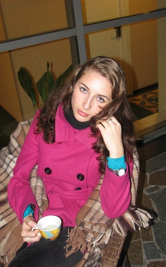
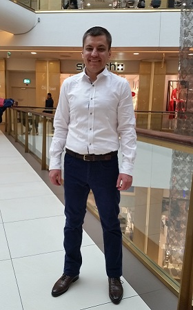
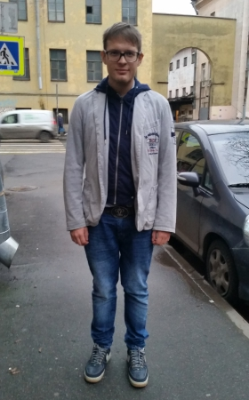
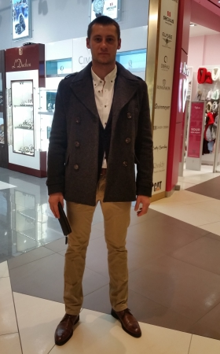

Опыт работы в области красоты, стиля и имиджа — 6 лет.
С начала своей карьеры в 2008г, прослушала бесчисленное кол-во семинаров / курсов посвящённых имиджу, стилю и шоппинг сопровождению. Так же проходила тренинги у представителя AICI (Международная Ассоциация Имидж Консультантов) в России — Ирины Ермаковой.
Разработала свой обучающий авторский курс по самостоятельному уходу за внешним видом, автор обучающих программ по нанесению декоративной косметики.
Автор многочисленных статей по имиджу и стилю.
Автор тренингов и семинаров по созданию индивидуального стиля и гармоничного образа.
ЧТО ПРО НАС ГОВОРЯТ
Денис Казьмин
Ольга Белоусова
Татьяна Синцова
Александр Прокофьев
Елена Белова
Николай Королев
Полина
Алексей Леонов
Александр Коссаковский
Лев Вожеватов
Виктория
Сергей Николаев
Сергей Ионов
Артем Портнов
Юрий
Владимир Заприкутенко
Елена Лебедева
Александр Ольховой
Камил Абдуллаев
Дмитрий Рябов
Возраст: 30 лет
Семейное положение: не женат
Профессия: предприниматель
Задача: Денис — человек занятой, два бизнеса занимают большую часть времени, именно поэтому для подбора гардероба он обратился к стилисту. Целью был элегантный стиль молодого предпринимателя.
До
после
результат
Начали мы с разбора гардероба, в следствие чего 90% одежды пошло в помощь детским домам — увы, она не подходила Денису по размеру, цвету, стилю.
В тот же день мы отправились на шоппинг, на котором купили 3 элегантных образа.
Увидев преображение, Денис захотел запечатлить все на фотографии - результаты имиджевой фотосессии говорят сами за себя.
Возраст: 55 года
Семейное положение: замужем
Профессия: не указано
Задача: Ольга приехала в Санкт-Петербург из Сибири, не только вдохновиться красотами нашего города, но и изменить себя.
До
после
результат
Ольга около 20ти лет работала бухгалтером, с утра до вечера, работала ради детей, всю жизнь проходив в скучных серо-черных костюмах в классическом стиле. Пришло время это изменить!
Получившийся результат приятно удивил Ольгу, она изменилась не только снаружи, но и засияла внутри, почувствовала себя женщиной!
Такой момент необходимо было запечатлеть и мы исполнили мечту Ольги — организовали имиджевую фотосессию. С нашей поддержкой, она переборола страх перед камерой и теперь наслаждается новыми образами и делиться фотографиями с родственниками и друзьями.
Возраст: 30 лет
Семейное положение: не замужем
Профессия: инженер
Задача: Татьяне подарили сертификат на полное преображение от нашего агентства — разбор гардероба, шоппинг со стилистом, стрижка и покраска волос, имиджевая фотосессия.
До
после
Отзыв Татьяны
Здравствуйте, хочу выразить огромную благодарность Юлии и всему агентству, за ее подвиги в формировании моего нового, другого и очень мне нужного образа, за ее профессионализм, за ее терпение, выносливость, понимание, стойкость, настойчивость (хоть и маленькую, но очень нужную).
Хочу сказать много слов благодарности и конечно спасибо, количество слов перевешает все мысленные и не мысленные эмоции. Очень хочется написать много слов и выразить все свои желания в просто слова. Желанию Юлии и всему агентству, только процветания и много интересных работ.
Возраст: 34 года
Семейное положение: женат
Профессия: Генеральный директор информационного агентства KudaGo.com
Задача: Александр обратился за помощью в подборе образа для церемонии награждения.
До
после
результат
Мы начали работу с разбора гардероба и обнаружили, что большая часть гардероба Александра не пригодна для дальнейшего использования — одежда была либо слишком подросткового стиля, либо неподходящего качества, цвета или размера. Обозначив объем работы и продумав все нюансы, мы приступили к шоппингу. С тех пор, уже третий год, Александр регулярно обращается к услугам имидж-агентства Жажда Стиля, чтобы выглядеть стильно в любом ситуации. Ниже вы можете увидеть фотографии результатов новой работы с Александром — образ для церемонии награждения бизнес-премии.
Возраст: 35 лет
Семейное положение: замужем
Профессия: бизнес-вумен
Задача: Елена преуспевающий предприниматель с обширным деловым гардеробом, но в рабочей суете она совершенно забыла про повседневный женственный гардероб, который она и поручила составить стилистам.
До
после
Отзыв Елены
Я открыла для себя массу новых впечатлений и новый мир себя самой в новых образах. Теперь я выгляжу моложе и привлекательней. Если бы я занималась шопингом самостоятельно, это бы закончилось разочарованием в собственной фигуре и возрасте, раздражением на консультантах и стопкой новых, но ненужных вещей в гардеробе.
Вечером я вернулась в новой одежде и горой пакетов в руках. Я заранее переоделась в новый комплект, когда была в магазинах. Первой, что заметил мой муж – это счастливая улыбка и светящиеся глаза. Мой пятилетний сын оценил ярко-желтые брюки капри и красное ожерелье.
Возраст: 30 лет
Семейное положение: не женат
Профессия: Владелец компании по доставке суши
Задача: Николай недавно переехал в Санкт-Петербург, решив внести коренные изменения в свою жизнь. Освоившись в новом городе, у него на пути встало две задачи — построить свой бизнес и найти девушку для отношений.
До
после
результат
Очевидно, обе задачи требуют особого подхода к своему внешнему виду. Мы решили работать в элегантном повседневном стиле, используя классические элементы одежды (пиджак, пальто) в интересных цветовых и фактурных решениях.
Работая с клиентами, я, первым делом, расспрашиваю про их образ жизни и цели. На них накладываются внешность клиента (типаж, цветотип, тип фигуры) и его пожелания, что в результате дает возможность сформировать гармоничный стиль, который отвечает задачам клиента, и идеально подходит к его внешности и личности.
Возраст: 19 лет
Семейное положение: не замужем
Профессия: Студентка
Задача: Полина и Мария обратились в имидж-агентство Жажда Стиля для создания яркого привлекательного стиля. Перед поступлением в университет, девушкам хотелось выглядеть привлекательно и стильно.
До
после

Отзыв Полины
Мне было очень интересно и приятно с вами работать, все вещи,которые мы подобрали, мне очень понравились и я ношу их с большим удовольствием!
Возраст: 33 года
Семейное положение: не женат
Профессия: Руководитель проекта
Задача: Работая руководителем крупного проекта, Алексей понимал, что внешний вид важен и для продаж, и для имиджа компании. Для решения этой задачи он обратился к стилистам.
До
после
Результат
Начать решили с анализа гардероба, ведь прежде чем покупать что-то новое, было бы хорошо посмотреть на одежду, которая уже есть в наличие. Нас ждала наиболее популярная ошибка мужского стиля — одежда не по размеру. Какие-то дорогие костюмы отправились в ателье для посадки по фигуре, какие-то прямиком в утиль. Повседневный casual образ отсутствовал в гардеробе как класс, именно поэтому с него и было решено начать шоппинг сопровождение. Результатом стали 2 casual образа: первый на основе пиджака, чтобы не сильно шокировать окружающих при переходе от делового костюма к casual стилю; Второй — образ для досуга после рабочего дня и для свиданий — слегка небрежный, дерзкий, в то же время мужественный и элегантный.
Возраст: 26 лет
Семейное положение: не женат
Профессия: Программист
Задача: Александр был на моих обучающих семинарах и самостоятельно проанализировал свой гардероб на предмет одежды не по размеру, а так же совсем неподходящих вещей. Иначе говоря, старт был задан хороший изначально. Но все еще было над чем работать — над красивым сочетанием цвета и фактуры.
До
после
Отзыв Александра
Спасибо Максиму за профессиональный подход в выборе образа! Разбор существующего гардероба, разбивка привычных мне сочетаний верха/низа, создание новых комбинаций из того, что уже есть. Шоппинг прошёл на одном дыхании, с ходу был подобран пиджак, что по словам Макса бывает очень редко. Брюки, рубашки, туфли уже ждали, чтобы их купили. Получившийся образ порадовал гармоничностью, яркостью, собранностью и вообще крутым сочетанием! Ещё раз спасибо Максу за качественную работу!
Возраст: 31 год
Семейное положение: не женат
Профессия: Тренер по отношениям, основатель тренингового центра «Харизма и отношения»
Задача: Образ харизматичного успешного мужчины.
До
после
Отзыв Льва
В моем деле важно выглядеть стильно. Обучая людей, невольно становишься для них примером. А пример должен быть вдохновляющий. Экспериментируя с одеждой решил воспользоваться услугами специалистов и обратился к Максиму. С ним уже не первый год знакомы, он работал с моими учениками и отзывы были хорошие. В итоге образ получился классный, в нем можно и на сцену, и на свидание. Хоть и занял весь процесс больше времени, чем рассчитывал, но мне понравилось. Макс, спасибо за работу. Успехов в дальнейшем развитии.
Возраст: 23 года
Семейное положение: не замужем
Профессия: Студентка
Задача: Виктория дважды обращалась к стилистам имидж-агентства Жажда Стиля. Основной задачей было начать одеваться стильно и красиво, подчеркнуть женственность. Так же Виктория хотела научиться самостоятельно сочетать одежду и цвета.
До
после
Результат
Совместно со стилистами, была проведена масштабная работа. Мы изменили прическу Виктории, сделали акцент на сочетании цветов одежды и природного колорита, разнообразили стиль аксессуарами и добавили несколько фишечек.
Отзыв Виктории
Любая ошибка во внешнем виде скажется на общем впечатлении от человека. Мне дешевле заплатить специалисту, чем самой ломать голову как сочетать купленную одежду. По сути, к тебе обратилась случайно, лазила по интернету, наткнулась на работы и они мне понравились. Результатом очень довольна! Ни на секунду не жалею о потраченном времени и деньгах.
Возраст: 33 лет
Семейное положение: не указано
Профессия: Предприниматель
Задача: Сформировать стиль, подходящий по возрасту, социальному статусу и образу жизни.
До
после

Результат
Сергей, в свои 33 года, придерживался спортивного уличного стиля — в гардеробе были футболки с различными принтами, обилие джинс, спортивные свитера и соответствующая обувь: кроссовки, полуспортивные мокасины и туфли. Мы исправили ситуацию, подобрав актуальный для его статуса и возраста гардероб.
Отзыв Сергея
Вчера был разбор гардероба и шоппинг с Максимом. Остался очень доволен, все четко, подробно, внимательно, красиво. Большая часть старых вещей из гардероба отправилась «на заслуженный отдых», новую одежду Макс подобрал отличную, в бюджет уложились. Всем рекомендую.
Возраст: 30 лет
Семейное положение: не указано
Профессия: Предприниматель
Задача: Сформировать стиль для ночной жизни
До
после
Результат
Сергей — успешный молодой бизнесмен. Ведя предпринимательскую деятельность в сфере туризма, он привык одеваться расслабленно, молодежно и часто по-спортивному. В имидж-агентство Жажда Стиля Сергей обратился для формирования образа для посещения вечеринок, клубов и других мероприятий.
Для решения этой задачи, мы решили двигаться в направлении smart casual.
В тот же день Сергей проверил действие нового образа в ночном клубе и был приятно удивлен результатом — девушки не оставили его без внимания.
Возраст: 24 года
Семейное положение: не указано
Профессия: Студент
Задача: Сформировать повседневный стиль, подходящий так же для свиданий и ночных клубов.
До
после


Результат
Спортивное прошлое и профессиональное занятия плаванием сказались на фигуре и привели к неожиданной для Артема проблеме - рукава рубашек и пиджаков, как правило, были слишком короткие для него.
Однако стилисты имидж-агентства Жажда Стиля знают в каких магазинах можно купить одежду под конкретный тип фигуры и особенности телосложения, и задача Артема была быстро решена.
В качестве аксессуара для клубных вечеринок, в нагрудный карман пиджака мы добавили акцентный платок.
Возраст: 23 года
Семейное положение: не женат
Профессия: Предприниматель
Задача: Некоторые обращаются к врачу, когда что-то болит. Иные приходят когда особых проблем-то и нет, но хочется держать все в идеальном состоянии.
Юрий - из второй категории. Он и ранее неплохо одевался, но стремление быть лучшим во всем привело его ко мне.
До
после
Результат
Мы начали с консультации по стилю, где я рассказал какие цвета, узоры и их сочетания подходят Юре, какой стиль одежды уместен под тот или иной случай, какую одежду стоит выбрать, исходя из его внешности, фигуры и образа жизни.
Лучше всего обучение идет через практику, и после консультации мы договорились о шоппинге, во время которого Юрий узнал особенности формирования своего стиля в боевых условиях, какие бренды ему подходят и где лучше приобретать одежду.
Результаты работы мы запечатлели на имиджевой фотосессии, обновив не только стиль Юры, но и аватарки в социальных сетях.
Возраст: 44 лет
Семейное положение: не женат
Профессия: Токарь
Задача: Владимир приехал в Спб из Запорожья, оставив старый гардероб и старую жизнь. Новая же жизнь требовала нового гардероба.
До
после
Отзыв Владимира
В жизни каждого человека наступает момент, когда одежды много, а носить нечего.
Для меня важно, чтобы решил эту задачу профессионал. После недолгих поисков я нашёл его, Максим помог мне создать новый образ, он смог тонко подметить моё внутреннее состояние. Мы провели шопинг... и вот, вуаля! Новый образ готов.
Я сэкономит время и деньги. Максим великолепно справился с задачей, я остался доволен!
Рекомендую всем, кто хочет изменить себя в лучшую сторону обратиться в Имидж-центр Жажда стиля к Максиму,этому позитивном человеку - профессионалу своего дела.
Возраст: -- лет
Семейное положение: замужем
Профессия: Архитектор
Задача: Елена попала к стилистам имидж-студии Жажда Стиля благодаря своему мужу Илье и удачно выбранному подарку на новый год.
До
после
Подробнее о работе с Еленой:
Клиенты не всегда приходят к нам сами, иногда их приводят друзья, родители, дети или супруги. Елена попала к стилистам имидж-студии Жажда Стиля благодаря своему мужу Илье и удачно выбранному подарку на новый год.
Новый год - время перемен, и подарочный сертификат на услуги стилистов стал символом перемен для Елены.
Разбор гардероба, шоппинг сопровождение со стилистом, стрижка с покраской волос и имиджевая фотосессия - такой набор приключений ждал нашу героиню. Невооруженным взглядом заметно, после преображения Елена раскрыла свою мягкость и женственность, даже черты лица поменялись и улыбка стала незаменимой ее частью.
Возраст: 30 лет
Семейное положение: не женат
Профессия: Кузнец
Задача: Александр находится в активном поиске своей половинки, и чтобы быть с женщинами более успешным, было принято решение поработать над своим стилем.
До
после
Отзыв Александра
После советов по стилю я пересмотрел весь свой гардероб и понял, что это все отправляется в благотворительные фонды. Так как ситуацию надо было срочно менять, мне предстояло идти этим вечером на свидание с очень шикарной барышней. Я задался вопросом кто же мне поможет в этом непростом деле как подбор классных вещей для моего образа. Друзья посоветовали обратиться к профессионалам и рекомендовали Макса. Я не раздумывая позвонил Максу и назначил встречу. При встрече мы обсудили стратегию по раскачке моего образа и отправились шопиться. Задача выдалась не из легких и заняла в два раза больше времени, чем планировалось. При скромном бюджете и на мой высокий рост, нам пришлось обойти большое количество магазинов и перемерить массу вещей. За это время я получил много классных советов и ценных рекомендаций в том, что мне подходит больше всего и на что в дальнейшем стоит обратить внимание. Макс решил задачу на отлично и за это ему благодарен. Ах, эта искра в глазах классной девчонки…
Возраст: 25 года
Семейное положение: не женат
Профессия: Инженер
Задача: Молодой и позитивный, Камил обратился ко мне за помощью в подборе одежды.
До
после
Отзыв Камила
Впервые воспользовался услугами имиджмейкера. Выбирал из множества имиджмейкеров в интернете. Выбор свой я остановил на Максиме - он ведёт активную и яркую жизнь в интернете, выкладывая самые разные, но всегда стильные образы. К Максиму я пришел без определенной цели, не совсем понимая, каким хочу себя видеть в конечном итоге. И думал, что перед ним станет непростая задача. Однако, во время консультации, рассказав о своем образе жизни, Максим почувствовал мой внутренний мир, понял мои предпочтения и вынес верный вердикт! Посмотрев на меня, он сразу определил мой цветотип, тип фигуры, указал на мои ошибки и подарил мне книгу с рекомендуемыми для меня фасонами одежды, возможными сочетаниями цветов гардероба и рекомендациями по подбору образов. Я никогда не любил шопинг, но Максиму удалось изменить мое отношение к нему. Шопинг прошел на позитивной волне, время пролетело незаметно! Благодаря профессионализму, интеллекту, внимательности и такту Максима, я получил много удовольствия от процесса. Планирую в дальнейшем еще раз воспользоваться его услугами. Максим, ты – настоящий профессионал своего дела. Спасибо тебе огромное за помощь! От всей души желаю успехов и процветания в твоей профессиональной деятельности!
Возраст: 36 лет
Семейное положение: не женат
Профессия: Предприниматель
Задача: Дмитрий позвонил в имидж-агентство Жажда Стиля со срочным запросом — подобрать костюм к другу на свадьбу.
До
после
Отзыв Дмитрия
Костюм необходим был на следующий день, так что задача действительно требовала срочного решения. Определив пожелания Дмитрия и бюджет на покупки, мы отправились в ТРЦ Галерея. При выборе пиджака столкнулись с трудностями — у Дмитрия покатые плечи, что существенно портит посадку большинства пиджаков (плечи топорщатся и мнутся). Решением стал пиджак с мягкими плечами, который повторял бы форму плеч Дмитрия. Остальные элементы образа подобрали уже без особых препятствий. Результат вы можете видеть на фото. Спустя несколько дней после свадьбы мы с Дмитрием встретились снова, для подбора повседневного гардероба. Фотографии повседневных образов будут чуть позже.